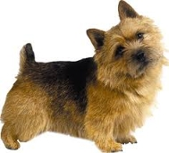

<? title('Норвич Терьер') ?>
<table border="0" class="layout">
    <colgroup span="1"><col width="25%" span="1"></col><col width="75%" span="1"></col></colgroup> 
    <tbody>
        <tr>
            <td valign="top">
                <div class="holster">
                    <div class="block_container s3 b-text b-static-text user_css_12816005438" id="e_127779756875">
                        <p><em><strong>Хлоповы Татьяна и Георгий</strong></em></p>
                        <p>тел.8-926-222-94-23, 995-70-98</p>
                        <p><strong>Заходите к нам в <a href="http://hassini.ru/">гости</a></strong></p>
                    </div>
                    <div class="block_container s3 b-image txt-center" id="e_1282743634596"><span></span></div>
                </div>
            </td>
            <td>
                <div class="holster">
                    <div class="block_container s3 b-text b-static-text user_css_12816005438" id="e_128274354943">
                        <p style="text-align: center;"><span style="color: #006600;"><span style="color: #0000ff;"><strong>Норвич терьер</strong></span></span></p>
                        <p style="text-align: justify;"><span style="color: #006600;"><span style="color: #0000ff;"><strong>Из истории породы</strong>: выведен норвич-терьер был для борьбы с крысами, однако в его родословной много неясного. Можно предположить, что среди предков породы были ирландский, бордер- и керн-терьеры. Вскоре после первой мировой войны норвич-терьер попал в США, где его стали называть джоунс-терьером (по имени Фрэнка Джоунса, который одним из первых серьёзно занялся разведением этой породы в США). В Великобритании норвич-терьеры (со стоячими и висячими ушами) были официально признаны породой в 1932 году. В 1965 году в Великобритании собаки с висячими ушами получили статус самостоятельной породы (норфолк-терьер), а в США - в 1979 году.</span></span></p>
                        <p style="text-align: justify;"><span style="color: #006600;"><span style="color: #0000ff;"><strong>Общая характеристика: </strong>это весёлые, преданные, выносливые и неприхотливые животные.</span></span></p>
                        <p style="text-align: justify;"><span style="color: #006600;"><span style="color: #0000ff;"><strong>Содержание и уход:</strong> живя в городе, норвич-терьер, вполне мирится с регулярными прогулками, но будет гораздо счастливее, если ему дадут побегать без поводка за городом. Он большой охотник на крыс и кроликов. Для ухода за шерстью требуется обычное расчёсывание и тримминг.</span></span></p>
                        <p style="text-align: justify;"><span style="color: #006600;"><span style="color: #0000ff;"><strong>Размеры: </strong>рост 25-26 см.</span></span></p>
                        <p style="text-align: justify;"><span style="color: #006600;"><span style="color: #0000ff;">________________________________</span></span></p>
                        <p style="text-align: justify;"><span style="color: #006600;"><span style="color: #0000ff;">&nbsp;</span></span></p>
                    </div>
                </div>
            </td>
        </tr>
    </tbody>
</table>​